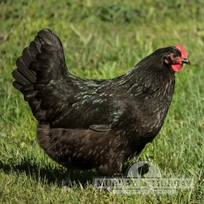
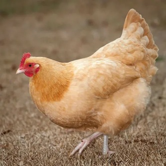
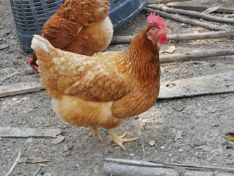
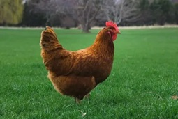
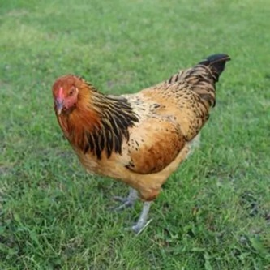
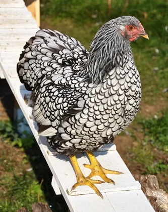

🐔 Why Your First Chicken Breed Matters
Your first experience with chickens often determines whether backyard chicken keeping becomes a lifelong hobby or a frustrating experience. While nearly every breed can produce eggs and provide enjoyment, not every breed is equally suited for someone with little or no poultry experience.
Some breeds are naturally calm, tolerate handling well, and adapt quickly to new environments. Others are highly active, easily startled, or require more attention to manage successfully. A beginner-friendly breed can make daily care easier, simplify training, reduce stress within the flock, and increase the chances of a positive experience for both the chickens and their owner.
For most first-time chicken keepers, the ideal breed combines reliable egg production with a gentle personality, good health, and the ability to thrive in a variety of climates. Fortunately, there are several breeds that consistently rank among the best choices for beginners.
⭐ Our Top Beginner Recommendations
If you simply want to know which chickens are easiest to own, these are the breeds we recommend most often for first-time backyard flocks.
| Rank | Breed | Why We Recommend It |
|---|---|---|
| 🥇 | Australorp | Excellent egg production, calm temperament, extremely beginner friendly. |
| 🥈 | Buff Orpington | Friendly, easy to handle, fantastic family chicken. |
| 🥉 | Plymouth Rock | Hardy, dependable layers, and very gentle. |
| 4 | ISA Brown | Outstanding egg production with an easy-going personality. |
| 5 | Rhode Island Red | Very productive, hardy, and forgiving for new owners. |
📊 Beginner Chicken Breed Scorecard
Choosing chickens isn't only about egg production. The breeds below are rated across the qualities that matter most to first-time owners.
| Breed | Eggs | Friendly | Easy to Handle | Cold Hardy | Beginner Score |
|---|---|---|---|---|---|
| Australorp | ★★★★★ | ★★★★★ | ★★★★★ | ★★★★★ | ★★★★★ |
| Buff Orpington | ★★★★☆ | ★★★★★ | ★★★★★ | ★★★★★ | ★★★★★ |
| Plymouth Rock | ★★★★☆ | ★★★★★ | ★★★★★ | ★★★★★ | ★★★★★ |
| ISA Brown | ★★★★★ | ★★★★☆ | ★★★★★ | ★★★★☆ | ★★★★☆ |
| Rhode Island Red | ★★★★☆ | ★★★★☆ | ★★★★☆ | ★★★★★ | ★★★★☆ |
No single breed is perfect for every backyard. However, if your priorities are friendly birds, dependable egg production, and easy day-to-day management, any of the breeds above are excellent choices for a first flock.
🐔 Detailed Beginner Breed Profiles
Every backyard flock is different. While all of the breeds below are excellent choices for beginners, each one has strengths that make it especially well suited for certain families, climates, and goals.
🥇 Australorp

If there were one breed that experienced chicken keepers recommend most often to beginners, it would probably be the Australorp. Originally developed in Australia, this breed became famous for laying hundreds of eggs per year while maintaining an exceptionally calm personality.
Australorps are curious without being overly active, tolerate handling extremely well, and rarely become aggressive toward people. Their relaxed temperament also makes them one of the easiest breeds for children to help care for.
They adapt well to confinement or free ranging, handle cold winters surprisingly well because of their dense feathering, and generally integrate easily into mixed flocks.
Why Beginners Love Australorps
- ✔ 250–300 large brown eggs every year
- ✔ Very calm temperament
- ✔ Excellent family pet
- ✔ Rarely aggressive
- ✔ Cold hardy
- ✔ Excellent feed efficiency
Best For: Nearly every first-time chicken owner.
🥈 Buff Orpington

Buff Orpingtons have earned the nickname "golden retrievers of the chicken world" because of their gentle, affectionate personalities. They are among the easiest chickens to tame and often enjoy interacting with people.
Although they produce slightly fewer eggs than commercial laying breeds, they more than make up for it through their calm behavior and ability to become wonderful backyard pets.
Their fluffy feathers make them extremely cold hardy, although they may appreciate additional shade during very hot summers.
Why Beginners Love Buff Orpingtons
- ✔ Extremely friendly
- ✔ Easy to handle
- ✔ Excellent with children
- ✔ Good winter layers
- ✔ Beautiful golden feathers
- ✔ Calm around other chickens
Best For: Families, hobby flocks, and anyone wanting friendly backyard pets.
🥉 Plymouth Rock

Plymouth Rocks have remained one of America's favorite backyard chickens for well over a century. They combine dependable egg production, good health, and an easy-going temperament that makes them ideal for beginners.
These birds tend to be curious without becoming destructive and usually fit well into mixed flocks. They are dependable layers of brown eggs and adapt well to both cold and warm climates.
Barred Plymouth Rocks are especially popular because of their attractive black-and-white feather pattern.
Why Beginners Love Plymouth Rocks
- ✔ 200–280 brown eggs annually
- ✔ Calm personality
- ✔ Easy to care for
- ✔ Excellent cold tolerance
- ✔ Long lifespan
- ✔ Very reliable layers
Best For: Families wanting dependable egg production with very little management difficulty.
🥚 ISA Brown

If maximum egg production is your primary goal, few breeds can compete with the ISA Brown. Developed specifically as a commercial hybrid layer, ISA Browns frequently produce over 300 large brown eggs each year.
Despite their commercial background, ISA Browns are surprisingly calm and friendly. They quickly learn routines, enjoy human interaction, and often become favorite backyard pets.
Their incredible productivity does come with one tradeoff—they generally have a shorter laying lifespan than traditional heritage breeds because they devote so much energy to producing eggs.
Why Beginners Love ISA Browns
- ✔ 300+ eggs per year
- ✔ Friendly personality
- ✔ Excellent first laying hens
- ✔ Feed-efficient
- ✔ Easy to manage
- ✔ Outstanding egg consistency
Best For: New chicken owners who want the highest possible egg production.
❤️ Rhode Island Red

Rhode Island Reds have been a favorite backyard chicken for generations because they combine excellent egg production with outstanding hardiness. They are adaptable birds that perform well in both hot and cold climates, making them one of the most dependable breeds for first-time owners.
Although they are generally friendly, they are also more confident and independent than breeds like Buff Orpingtons or Australorps. Many owners appreciate this personality because they are active foragers and require very little pampering.
Why Beginners Love Rhode Island Reds
- ✔ 250–300 large brown eggs each year
- ✔ Extremely hardy
- ✔ Great free-range birds
- ✔ Adapt well to many climates
- ✔ Excellent long-term layers
- ✔ Low maintenance
Best For: Beginners wanting productive, dependable chickens with very little fuss.
🥚 Easter Egger

Easter Eggers have become one of the most popular backyard chickens because of the colorful eggs they produce. Depending on the individual bird, eggs may be blue, green, olive, or occasionally pink-tinted, making every egg basket more colorful.
Temperaments vary slightly because Easter Eggers are hybrids rather than a standardized breed, but most are friendly, curious, and excellent family chickens.
They are generally healthy birds with good disease resistance and adapt well to a variety of climates.
Why Beginners Love Easter Eggers
- ✔ Beautiful colored eggs
- ✔ Friendly personalities
- ✔ Curious but gentle
- ✔ Good layers
- ✔ Hardy birds
- ✔ Every bird looks unique
Best For: Families who want colorful eggs and unique-looking chickens.
❄️ Wyandotte

Wyandottes are among the most beautiful backyard chickens available. Their striking feather patterns are matched by dependable egg production and excellent cold-weather performance.
They are generally calm birds, although they may be slightly more independent than Buff Orpingtons or Australorps. Their dense feathering helps them thrive during harsh winters.
Why Beginners Love Wyandottes
- ✔ Beautiful feather patterns
- ✔ Excellent winter layers
- ✔ Cold hardy
- ✔ Calm temperament
- ✔ Reliable brown egg production
- ✔ Long-lived birds
Best For: Backyard flocks in colder climates.
🥚 Leghorn
Leghorns are legendary egg producers and remain one of the most efficient laying breeds in the world. If egg numbers alone were the deciding factor, they would rank near the very top.
However, they are much more active than most beginner breeds. They prefer exploring, flying, and foraging rather than sitting on someone's lap. Because of their energetic personality, they may not be the best choice for families looking for pet-like chickens.
That said, if your primary goal is producing large numbers of white eggs while minimizing feed costs, Leghorns remain an outstanding option.
Why Beginners Still Choose Leghorns
- ✔ 280–320 white eggs annually
- ✔ Extremely feed efficient
- ✔ Rarely broody
- ✔ Healthy birds
- ✔ Outstanding commercial layers
- ✔ Excellent free-range chickens
Best For: Owners focused primarily on maximum egg production.
🚫 Chicken Breeds Beginners May Want to Avoid
Nearly every chicken breed can make a good backyard pet with the right experience. However, some breeds present additional challenges that first-time owners may not be prepared for.
| Breed | Why It May Be Difficult |
|---|---|
| Old English Game | Very active and sometimes aggressive. |
| Malay | Large, powerful birds requiring experienced handling. |
| Modern Game | Nervous temperament and poor cold tolerance. |
| Asil (Aseel) | Can be territorial and dominant. |
| Gamefowl | Often bred for behavior rather than beginner friendliness. |
These breeds aren't "bad" chickens—they're simply better suited to experienced poultry keepers who understand their unique behaviors and management needs.
👨👩👧 Best Chickens for Families with Children
| Breed | Why Families Love Them |
|---|---|
| Buff Orpington | Gentle, affectionate, enjoys human interaction. |
| Australorp | Calm, patient, easy to handle. |
| Plymouth Rock | Friendly, curious, dependable. |
| Easter Egger | Colorful eggs make collecting eggs exciting for children. |
❄️ Best Beginner Breeds for Cold Climates
- Australorp
- Buff Orpington
- Plymouth Rock
- Wyandotte
- Rhode Island Red
These breeds have dense feathering, strong body size, and excellent winter laying ability, making them dependable choices for northern climates.
☀️ Best Beginner Breeds for Hot Climates
- Leghorn
- Rhode Island Red
- ISA Brown
- Easter Egger
These breeds generally tolerate warmer weather well, especially when provided with shade, fresh water, and good coop ventilation.
🐔 Choosing Your First Flock
For most beginners, a small mixed flock is better than choosing only one breed. A mixed flock gives you a better balance of egg production, personality, color variety, and climate hardiness.
A great first flock for many families would be:
- 2 Australorps
- 2 Buff Orpingtons
- 2 Easter Eggers
This combination gives you calm birds, friendly personalities, good egg production, and a colorful egg basket. It also avoids choosing only high-production hybrids, which may lay heavily early but sometimes slow down sooner than heritage breeds.
A six-hen flock like this could reasonably produce around 1,200 to 1,600 eggs per year under good conditions, depending on age, season, feed quality, and daylight.
Before buying your first birds, use our Backyard Chicken Flock Planner to estimate coop space, run size, nesting boxes, and expected egg production.
❓ Frequently Asked Questions
What is the easiest chicken breed for beginners?
Australorps, Buff Orpingtons, and Plymouth Rocks are among the easiest breeds for beginners because they are calm, hardy, friendly, and reliable layers.
How many chickens should a beginner start with?
Most beginners do well starting with 4 to 6 hens. This is enough to provide regular eggs without becoming overwhelming.
What chicken breed is best for kids?
Buff Orpingtons, Australorps, Plymouth Rocks, and Easter Eggers are good choices for families because they tend to be gentle and easier to handle.
Are Leghorns good for beginners?
Leghorns are excellent egg layers, but they can be more active and flighty than calmer breeds. They are best for beginners who care more about egg production than pet-like behavior.
What breed lays the most eggs?
ISA Browns, Golden Comets, and Leghorns are among the highest-producing egg layers, often laying 280 to 330 eggs per year in good conditions.